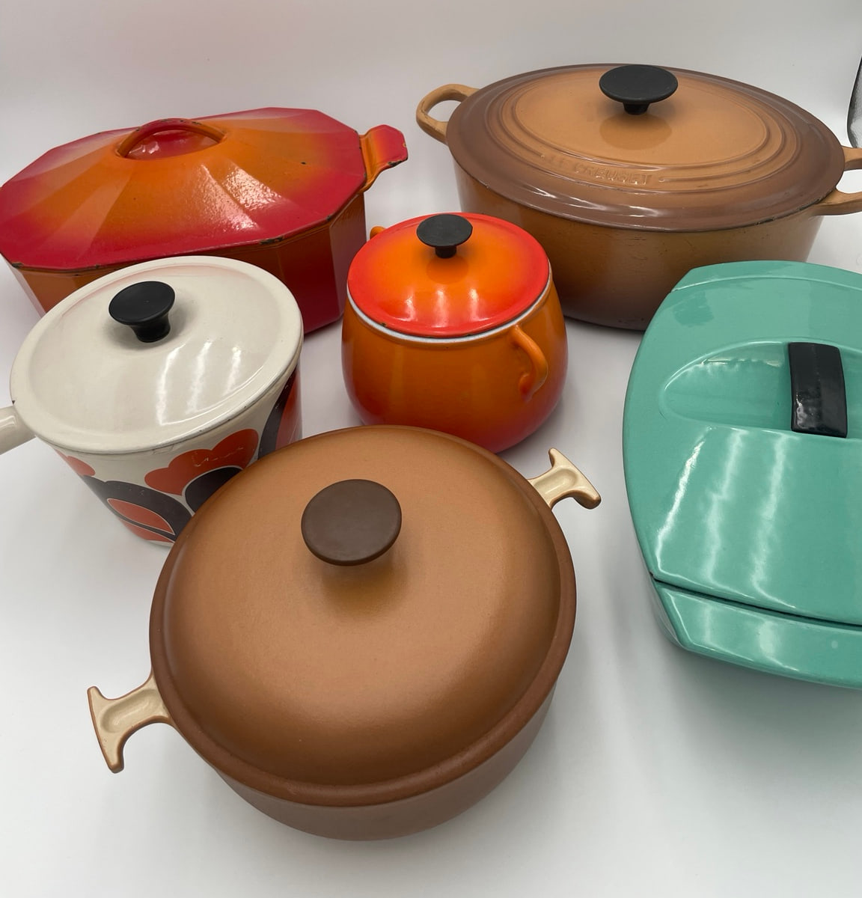
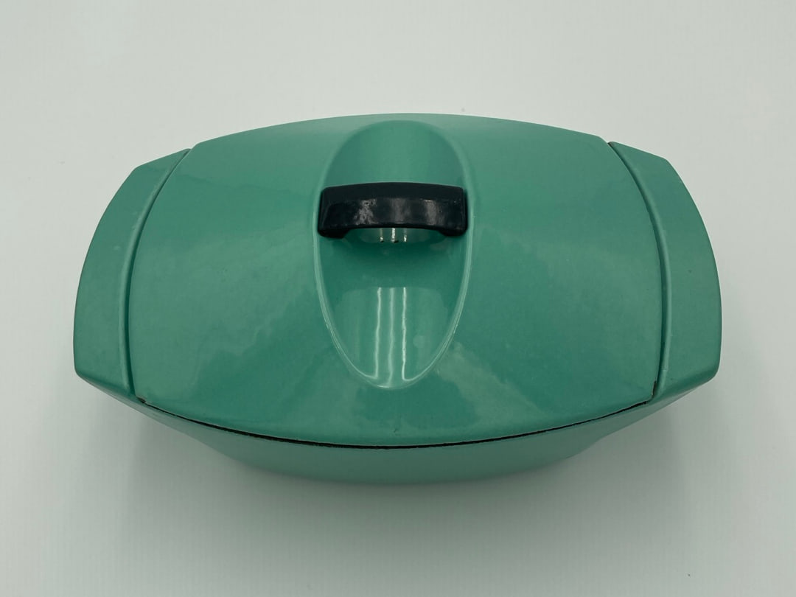
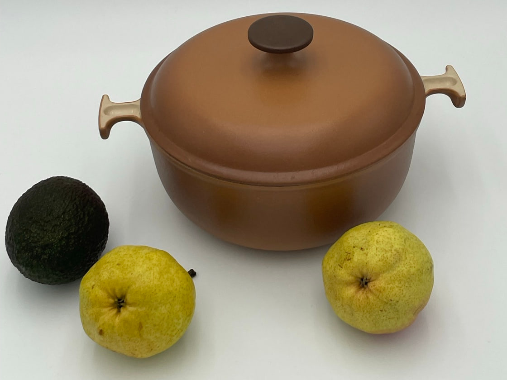
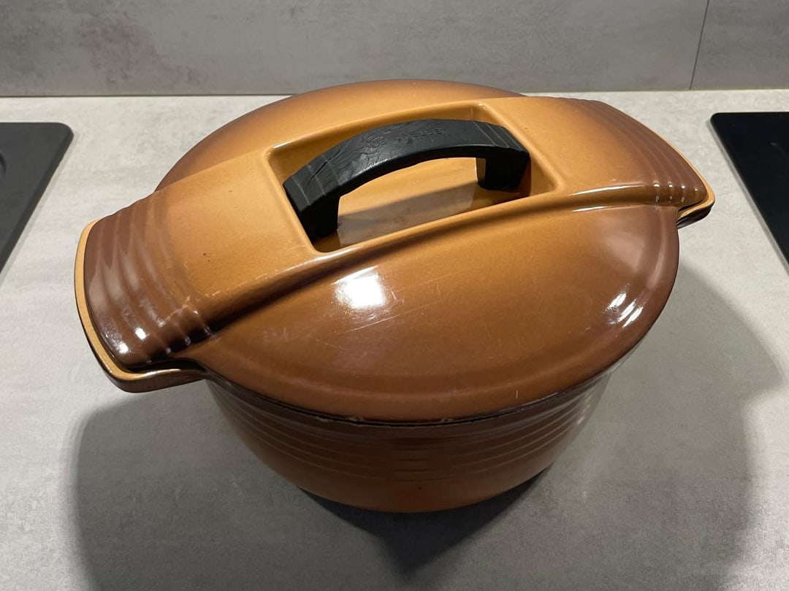
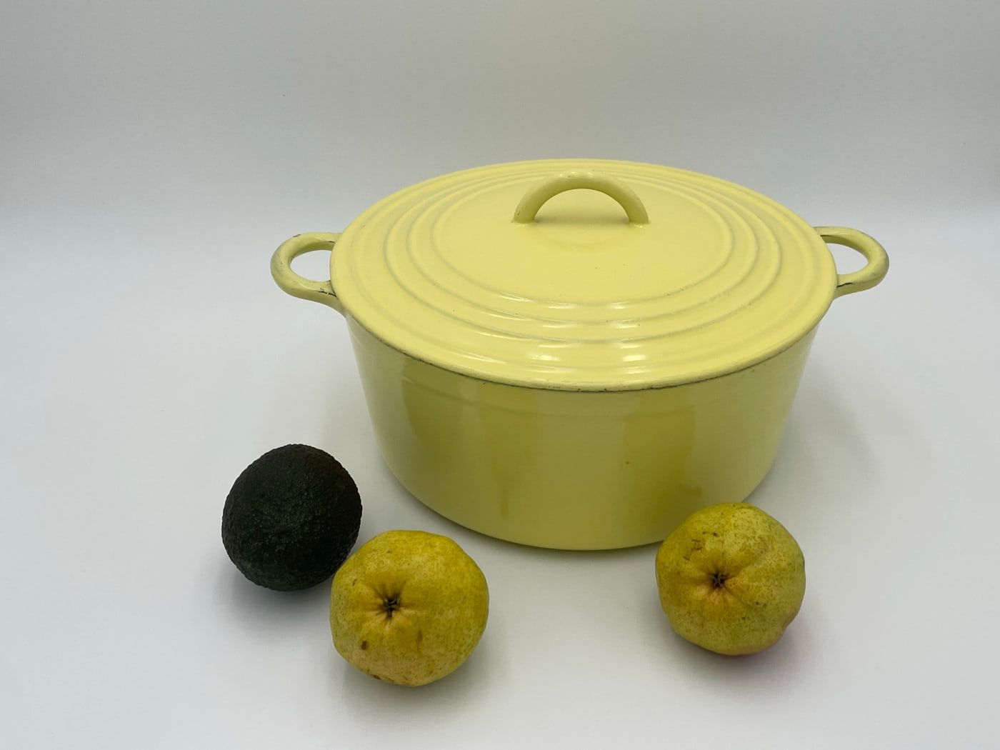
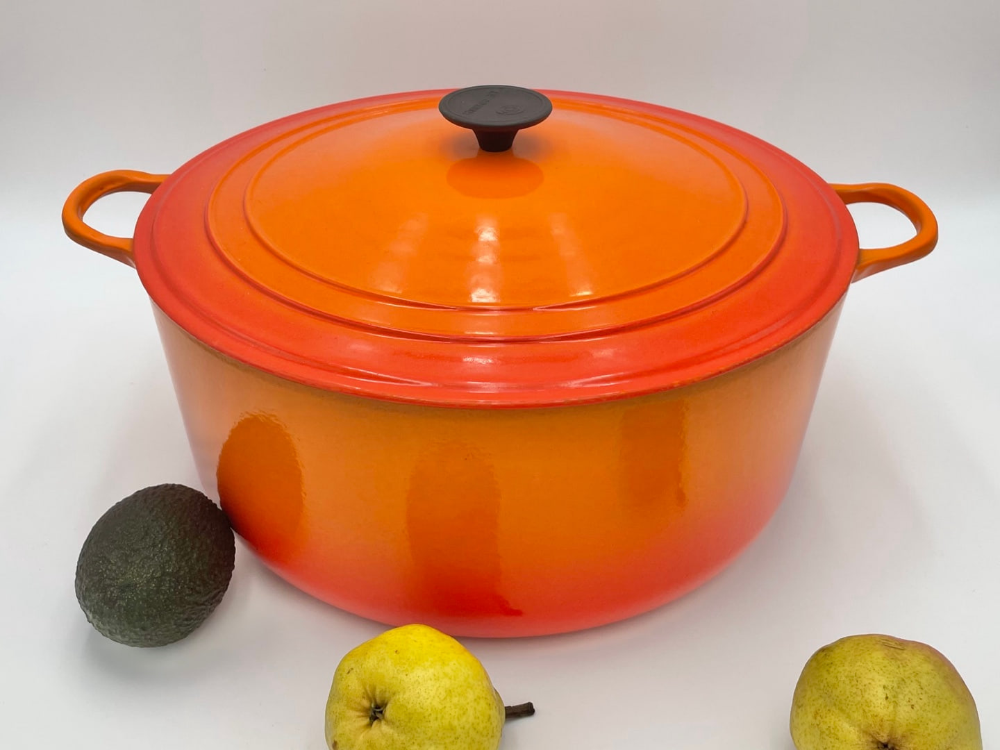

Specialist Guide
Vintage Le Creuset
A Collector’s Guide to French Cast Iron & 20th-Century Design
From the early enameled cast-iron cocottes of Fresnoy-le-Grand to Raymond Loewy’s Coquelle and Enzo Mari’s La Mama, this guide explores the designs, colours and identifying features that shaped vintage Le Creuset.

A Century of French Cast Iron
Founded in 1925 at Fresnoy-le-Grand in northern France, Le Creuset brought together Armand Desaegher’s knowledge of cast iron and Octave Aubecq’s expertise in enamelling. The new foundry centred its production on enameled cast-iron cookware and colour. Its first and most recognisable finish was the orange-red Volcanique, known as Flame in English-language markets and inspired, according to Le Creuset’s archive, by molten iron.
Over the following decades the range extended well beyond the familiar round cocotte. New handles, lid profiles, cooking forms and enamel treatments appeared, while collaborations with industrial designers opened another line of enquiry. Le Creuset cookware can therefore be read both as culinary equipment and, in selected cases, as part of twentieth-century European design history. This hub introduces those strands without attempting to compress each one into a single corporate chronology.
Why Vintage Le Creuset Matters
For collectors, vintage Le Creuset is not a single category. Production spans changing handle forms, lid profiles, enamel treatments, colours and markings, alongside several documented designer collaborations. Some pieces belong primarily to culinary history; others, such as the Coquelle, also sit firmly within the history of post-war industrial design. Understanding those differences is essential when identifying an old Le Creuset piece or considering the period to which it may belong.
Cook & Collect begins with the object: its form, casting and base markings, handles, knobs, lid construction, enamel colour and finish, dimensions and signs of use or later replacement. Those observations are then compared with documented catalogues, period advertising, manufacturer archives and museum records. A model reference found in a catalogue carries a different weight from resemblance to another object, and the distinction should remain visible in any attribution.
No single feature provides a universal dating rule. Marks, typography, knobs, colours and handles can overlap between production periods or be replaced during a piece’s working life; they become useful when read in combination and tested against dated documentation.
Le Creuset Design Timeline
The milestones below are deliberately selective. They identify documented changes and collaborations that will later be examined in dedicated research guides.
1925
The Beginning
Le Creuset is founded at Fresnoy-le-Grand in northern France by casting specialist Armand Desaegher and enamelling specialist Octave Aubecq. Enameled cast iron becomes the company’s central material, while Volcanique — the orange-red finish later known as Flame in English-language markets — establishes colour as an important part of Le Creuset’s visual identity.
1933–1935
An Early Range Takes Shape
Surviving period material gives a clearer view of Le Creuset’s early range. A 1933 advertising blotter preserved by the Familistère de Guise documents Le Creuset cookware only eight years after the company’s foundation. Two years later, an illustrated 1935 trade catalogue, Fonderies – Émailleries, records a considerably broader culinary range associated with Fresnoy-le-Grand.
The catalogue documents forms including the oval “Daubière”, Pot du Hainaut, Pot-au-feu “Culina”, Timbale Milanaise and Légumier Niçois, alongside several enamel treatments and finishes including Volcanique, Royale and Eureka.
These documents provide securely dated reference points for forms and finishes that were commercially documented by the mid-1930s. They should not, however, be used to assign the year 1933 or 1935 automatically to a surviving object.
1950s
Form, Colour & Expansion
Le Creuset’s own historical material describes the post-war years as a period of expanding production, export and experimentation with colour and form. During the 1950s the range included increasingly distinctive silhouettes and finishes. The Rayure collection used a characteristic vertical gradient, while Le Creuset’s archive documents the Alpine skillet in 1955, combining a curved cast-iron body, beech handle and satin-black enamel interior.
Period advertising from the decade also documents an increasingly varied cookware range, providing useful comparison points between earlier forms and later generations without establishing exact dates for every construction change.
1958–1960
Raymond Loewy
Le Creuset associates Raymond Loewy’s involvement with the company with 1958. The Centre Pompidou catalogues the Coquelle in its design collection with a 1958–1975 date range while separately recording “Dessinée en 1960”. Read together, these sources establish the Coquelle firmly within Le Creuset’s post-war design history while illustrating why collaboration, design and production dates should not automatically be treated as identical.
1972–1973
Enzo Mari / La Mama
The chronology of Enzo Mari’s Mama collection is unusually well documented. A contemporary account published in 1974 records that the new design was presented to around 80 European journalists in Naples and Capri in September 1972, several months before its European market introduction in January 1973. The Musée des Arts Décoratifs in Paris also catalogues a Mama cocotte by Enzo Mari, manufactured by Le Creuset, as 1973.
The distinction is useful for collectors: 1972 is associated with the collection’s development and pre-launch presentation, while 1973 provides documented European commercial and museum reference points. Neither date should be applied automatically to an individual surviving Mama object.
The collection’s rounded forms and characteristic T-shaped lid handles created a highly recognisable visual identity and connected everyday cast-iron cookware with Mari’s broader approach to direct, functional industrial design.
1987
Jean-Louis Barrault / Futura
In 1987 French designer Jean-Louis Barrault developed Futura, revisiting the line of design-led cookware through streamlined silhouettes and two-colour enamel treatments. It marks a later stage in Le Creuset’s movement between established cooking forms and contemporary design.
Designer Le Creuset
Three collaborations provide the clearest structure for future specialist pages. Their significance lies not in a designer name alone, but in the relationship between a documented commission, a recognisable form and surviving objects that can be compared with archival or museum records.
Cook & Collect has handled and photographed an example of each of the three, shown below. Each photograph documents the object we examined; the dates in the accompanying text belong to the documented design and its commercial or museum chronology, not to the individual piece in the frame.

Raymond Loewy
Coquelle & Related Designs
Coquelle replaced the conventional round cocotte silhouette with an oblong, angular vessel and integrated visual logic. Le Creuset’s archive also documents Loewy skillet and grill designs. Together they show a post-war industrial designer treating cookware as a coordinated problem of handling, pouring, storage and appearance.
Le Creuset associates Loewy’s involvement with the company with 1958; the Centre Pompidou catalogues the Coquelle with a 1958–1975 date range and separately records “Dessinée en 1960”. Those are statements about the design. The example above is recorded as an observed object: oblong body with canted ends, a single bar handle on a shallow lid, turquoise enamel and wear consistent with use. Its own production date has not been established.

Enzo Mari
La Mama
Presented to the European press in September 1972 and documented on the European market and in museum records in 1973, La Mama’s rounded bodies and unmistakable lid and side-handle treatment make the collection visually economical rather than ornamental. Individual pieces still require separate examination of size, form, markings and construction before a production period is proposed.
The example above shows the rounded body and domed lid of the collection, a disc lid knob and the contrasting light-coloured side handles set against brown enamel. It is documented here as an object from the Cook & Collect archive; neither 1972 nor 1973 is transferred to it.

Jean-Louis Barrault
Futura
Futura carried designer-led Le Creuset into the late 1980s with cleaner silhouettes, practical handles and contrasting enamel colours. A dedicated guide will need to distinguish the documented collection from pieces that merely share a late-century appearance.
The example above shows the ribbed body and the wide, low lid with its recessed well and black bridge handle. Brown and copper-toned enamel, scratches and rim wear are all as photographed. No production year is assigned to this individual piece.
Recognising Vintage Le Creuset
Dating vintage Le Creuset rarely depends on a single mark. Shape, handle construction, lid design, enamel treatment, typography and colour can all provide useful clues. The four areas below define the evidence that future identification guides will examine in depth.


Different lid and handle constructions found on vintage Le Creuset pieces examined by Cook & Collect: an arched cast lid handle on one, a black disc knob on the other. Construction details can provide useful comparative evidence, but should be assessed together with shape, markings, dimensions and dated documentation. Neither piece is dated from its colour or its handle alone, and the two are not presented as an earlier and a later generation.
Marks & Base Stamps
Factory wording, country marks, cast lettering, applied labels and details on the underside can contribute to identification. They should be transcribed and photographed exactly before being compared with documented examples.
Handles & Knobs
Wood, cast iron, phenolic materials and other constructions appear across different forms and periods. Attachment, proportion and evidence of replacement matter as much as the material itself.
Colours & Enamel
Volcanique, colour gradients, Rayure and later palettes provide important comparative evidence. Colour names and dates should come from catalogues or manufacturer archives, not from modern marketplace descriptions.
Shapes & Model Numbers
Diameter, capacity, proportions and model references can connect an object to a documented form. A number is useful evidence only when its function and relationship to the piece are established.
Identification is cumulative. A familiar colour or a plausible knob may support an attribution, but neither should be converted into an exact decade without corresponding documentary evidence.
This page sets out the history, the designs and the collaborations. Working through an individual object — its shape, base, markings, handles, lid, enamel and dimensions, and the dated documents to compare them with — is the subject of a separate guide.
Selected Vintage Le Creuset Designs
Three records from the Cook & Collect archive, photographed by us. This is an archive of handled pieces rather than a product grid: no prices, availability claims or shopping actions are attached to the records, and no production year is attached to an object that has not been dated from its own evidence.
Raymond Loewy
Coquelle
Oblong cast-iron vessel with canted ends, a shallow lid and a single dark bar handle, in turquoise enamel. The Coquelle form is documented in the Centre Pompidou design collection as a Raymond Loewy design manufactured by Le Creuset at Fresnoy-le-Grand.
Enzo Mari
La Mama
Rounded cast-iron cocotte with a domed lid, disc knob and contrasting light-coloured side handles, in brown enamel. The Mama collection is documented in Europe from its September 1972 press presentation and its January 1973 market introduction, and by a 1973 object in the Musée des Arts Décoratifs.
Jean-Louis Barrault
Futura
Ribbed cast-iron body with a wide, low lid, a recessed handle well and a black bridge handle, in brown and copper-toned enamel. Futura is documented as a Jean-Louis Barrault design for Le Creuset developed in 1987.
Further pieces will be added as their photographs, measurements, marks and research notes are prepared. Where an object has been previously sold, it will remain described as an archive reference rather than presented as current stock.
How We Research Vintage Le Creuset
Our research combines examination of vintage Le Creuset pieces with period catalogues, advertisements, manufacturer archives, museum collections and documented design references. Observations made directly from an object — marks, dimensions, construction and condition — are recorded separately from conclusions drawn through comparison.
Because cookware remained in production for long periods and individual features may overlap between generations, dates are presented conservatively where documentary evidence is incomplete. Particular attention is given to casting marks, dimensions, handles, lid construction, enamel finishes and documented colourways. Museum records can establish a designed object and institutional chronology; they do not automatically date every related surviving example.
Objects shown from the Cook & Collect archive have been handled, examined or previously sold by us unless otherwise indicated. Cook & Collect is not affiliated with Le Creuset and does not present these notes as official authentication or certification.
Le Creuset Research Guides
This hub is designed to grow into a specialist content cluster, with a dedicated guide for each subject as its research is completed. Identification and dating is the first published child guide.
For a material-led approach to French cookware, read our guide to vintage French copper cookware. For another specialist object category, see the guide to vintage French champagne buckets.
Research & References
The references are ordered by evidential weight: period catalogues and advertising first, followed by museum and institutional records, then manufacturer archives and the contemporary launch account. A document dated to a year establishes a reference point for the form or range it shows; it does not automatically date an individual surviving object.
- Period catalogues & advertising
-
- Le Creuset (Société Anonyme), Fonderies – Émailleries, Fresnoy-le-Grand, February 1935, 23 pp.
Illustrated trade catalogue documenting Le Creuset culinary cast iron, including early cookware forms and the Volcanique, Royale, Eureka and decorative ranges. Alain Brieux catalogue record - Fonderies et Émailleries Le Creuset — advertising blotter, 1933. Familistère de Guise, inventory 2006-29-1.2.
Institutionally preserved period advertising documenting the early Le Creuset range. The linked modern Familistère publication catalogues and reproduces the original blotter; it is not itself a Le Creuset catalogue. Familistère publication, PDF page 70
- Le Creuset (Société Anonyme), Fonderies – Émailleries, Fresnoy-le-Grand, February 1935, 23 pp.
- Museum & institutional collections
-
- Musée des Arts Décoratifs, Paris — Cocotte [Mama], Enzo Mari / Le Creuset, 1973, inventory 989.538.
Institutional catalogue record documenting Enzo Mari as creator, Le Creuset as manufacturer and the object as 1973. - Centre Pompidou — Cocotte Coquelle, Raymond Loewy, inventory AM 2002-1-23.
The museum records a 1958–1975 date range, separately notes “Dessinée en 1960”, and identifies Le Creuset, Fresnoy-le-Grand, as manufacturer. View institutional record - Smithsonian National Museum of American History — La Mama pot from Julia Child’s kitchen.
Independent museum record identifying Enzo Mari as designer and documenting the La Mama line as introduced by Le Creuset in 1973. View institutional record
- Musée des Arts Décoratifs, Paris — Cocotte [Mama], Enzo Mari / Le Creuset, 1973, inventory 989.538.
- Manufacturer archives
- Le Creuset’s official historical material supports the company foundation, Volcanique, Rayure, the Alpine skillet and named designer collections. It is read alongside period and independent institutional evidence where available.
- Contemporary documentary source
- Canadian government publication — contemporary Mama launch account, 1974.
The account records a European press presentation in Naples and Capri in September 1972, European market introduction in January 1973 and a United States launch in July 1974. These are presentation and market chronology points, not manufacturing dates for every surviving Mama object.